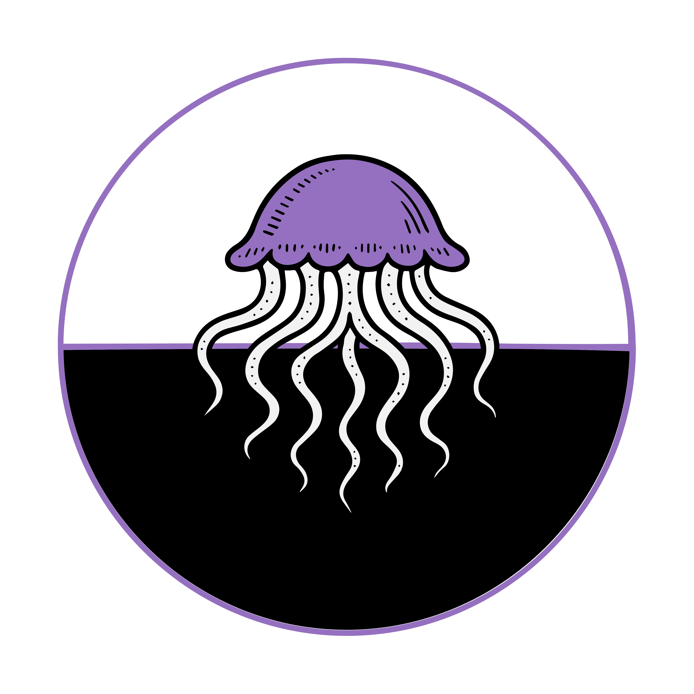
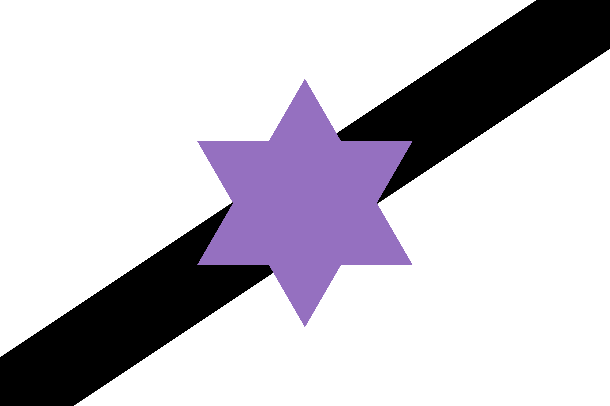

Overview
Sønshuənia, officially the Pølænsíne Sønshuənia (Sønshuənia Province) and commonly known as The Capital, is and island province off the southern coast of Ji Dənsh in the Stuhŋacha Ocean and the current federal capital district of The Republic of Shæwraka. Sønshuənia is the 6th largest province in terms of population. Sønshuənia is known for having the most concentrated population of Sharkin out of any province, with 62% of the island's population being Sharkin as of 2022.